The road up along the Sacramento River through the delta is a study in autumn.
The road is quiet. Trees all around in various shades of orange and green. A long, slowly curving river that cuts through both sides of the road. It's very peaceful out here.
The turn-in to Locke is unassuming and quick -- if you miss it you'll have to U-turn later. It's the more popular of delta towns. The town is in a "preserved-natural" state, with buildings leaning sideways and dilapidated, but with businesses still thriving inside. Several buildings have also been preserved in their broken state, just subtly fortified without completely changing the exterior. On the main street alone, there are four curated museums, in addition to an old restaurant from the 1930's called Al the Wop's (Wop was apparently a slur referring to those "with-out papers" during the anti-immigration era). We take our time to wander around.
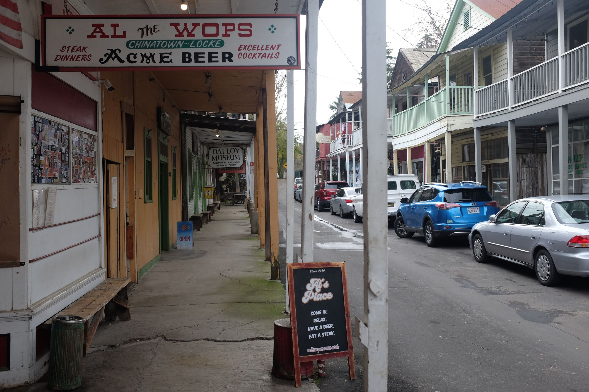
First, we go into the old Joe Soong Chinese School Museum. He used to be a Chinese American businessman and donated to this school. Inside, Chiang Kai-Shek's picture hangs alongside a Republic of China and American flag. Pictures of schoolkids on poster paper line the walls. In the middle of the room, several rows of desk line the floor. It's an otherwise plain schoolhouse, reminscent of the old American schoolhouse, with wooden construction, a linoleum floor and a blackboard. It is
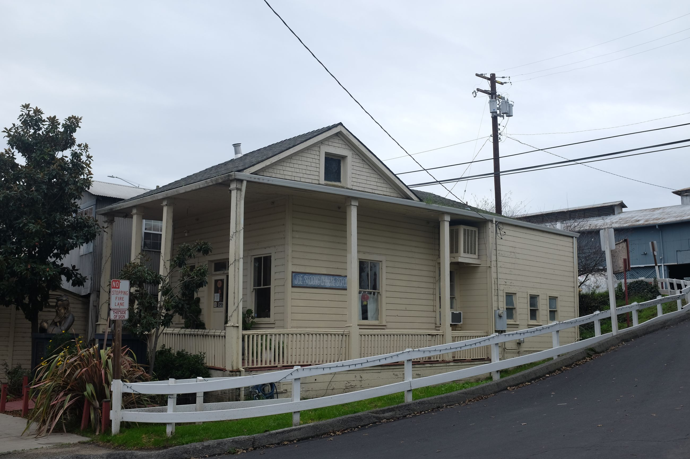 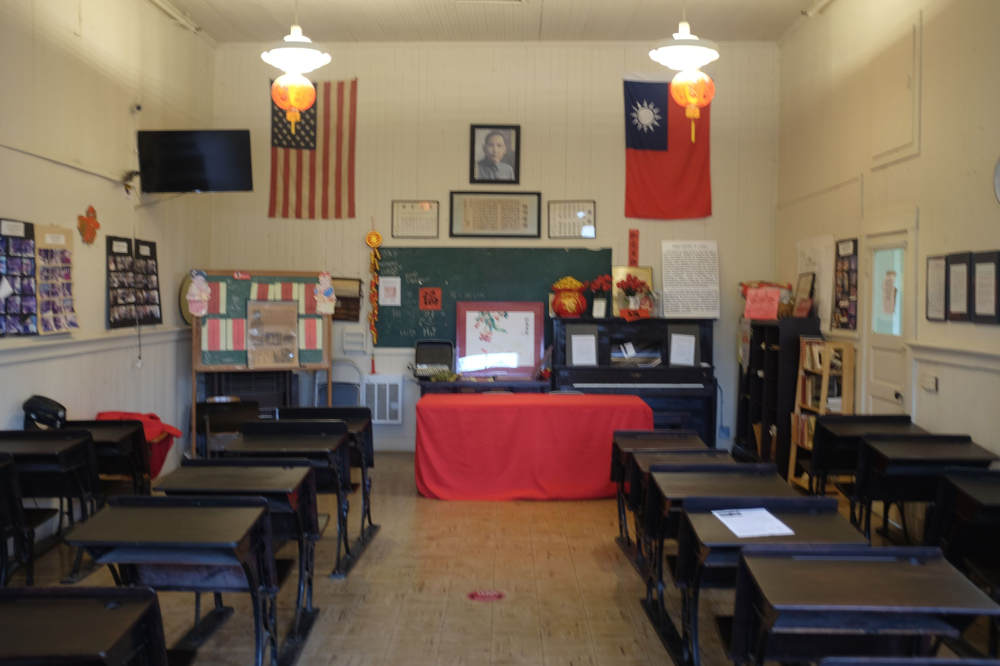
A delta town in the U.S. with semi run-down frontier-style architecture with Chinese text on it is strange to see. I think of the stilted fishing villages in Hong Kong (Tai O, for example), and can imagine how the old homes of Qing China were fused with the architectural norms of 19th and 20th century California boomtown aesthetic.
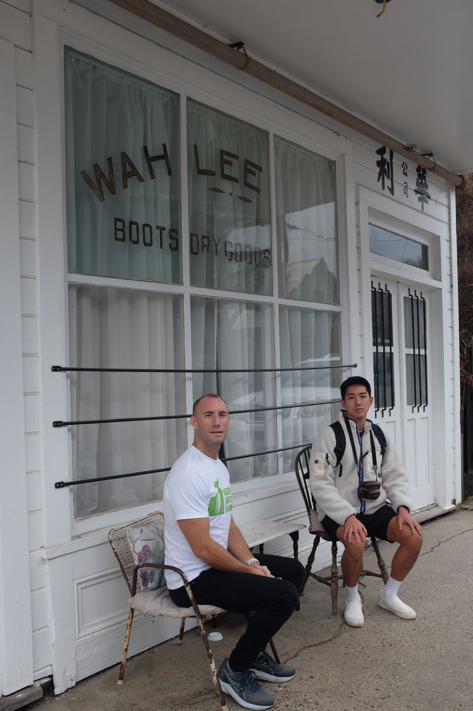
Surprisingly pleasant are the oddities in construction that have morphed over time. Much like the road into Isleton, many delta buildings are extermely warped around the edges. At the time of writing, I live in Hong Kong, whose houses are conveniently constructed, not well-planned. Such examples are odd connections of corners to a slanted point, and random ad hoc fixtures jutting out from concrete walls. Locke is no different. For all the buildings, there are oddities in construction: pillars holding up the balcony seem to be different lengths; the windows are all of different sizes and at an asymmetry to each other.
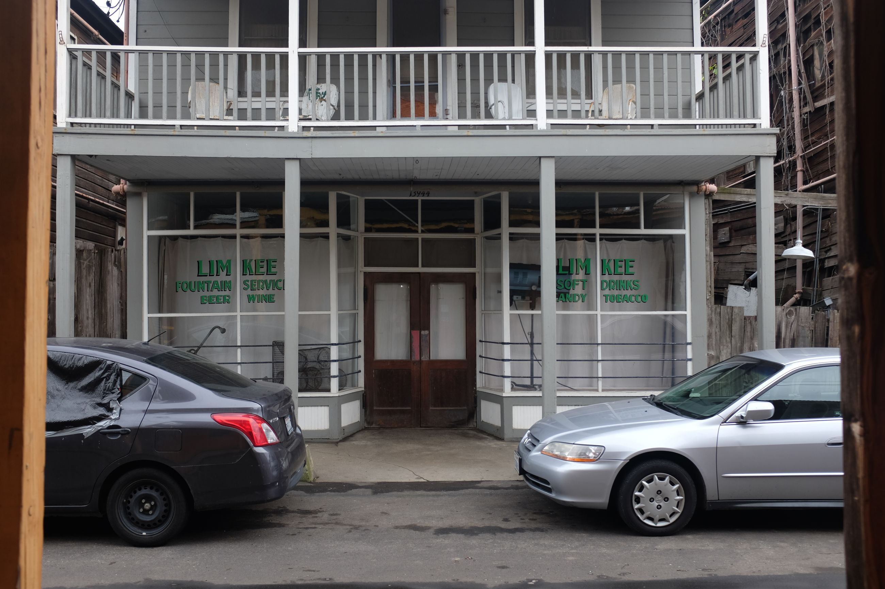
Nowhere is this "living" construction more evident than in Dai Loy Museum -- the gambling museum. Painted in a strange teal colour, the building has completely morphed with the geography of the delta. The floor is crooked and slanted, and the ceiling seems to morph with it. The skirting board on the walls are also at a bend. On the ground, a folded piece of metal connected the line of the floor to the wall was a "quick spitoon" where gamblers would spit, workers would pour wooddust on, and clean it at the end of the day.
The best part is that the building is also "living" in the sense that the storage room still functions as a storage room, piled with a random assortment of stuff. The money room, tucked in the corner, shows a small bingo ball machine (there used to be Chinese characters) and some pictures from olden days.
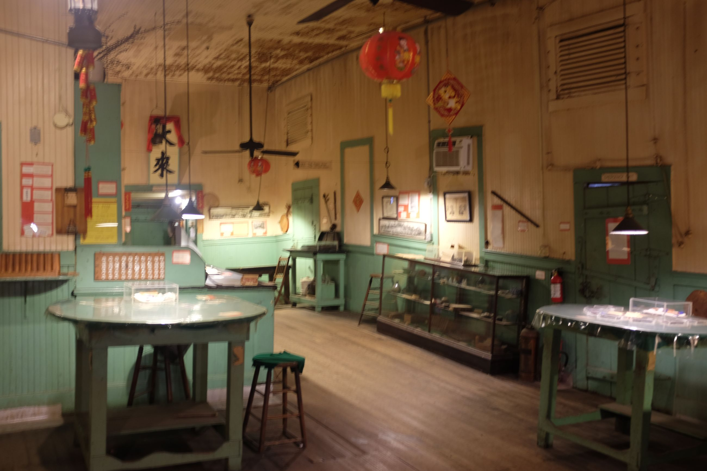 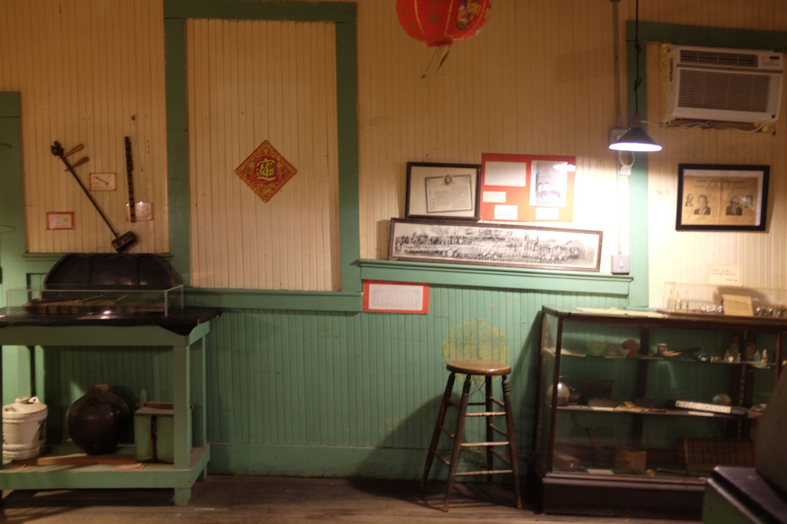 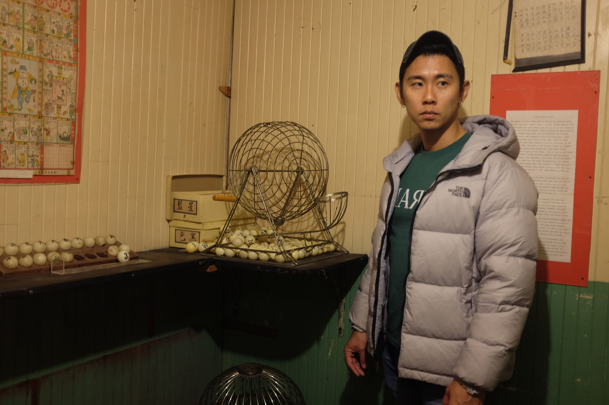
Our next stop is a place called Al the Wop's. This bar has apparently been around since the 30's and in continual operation.
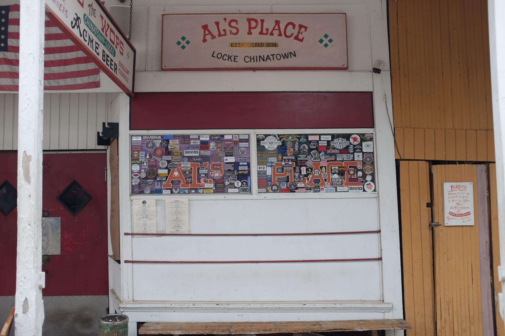
The inside is pretty standard dive bar. There is an open, vacuous entrance with a few stragglers sitting on the bar. On the ceiling are dollar bills folded and pinned in some disastrous array. A lady comes over to us and says that she's from Fremont and comes to this bar often -- says their specialty is "banana peppers and peanut butter". Strange combination, but it works. She films us eating it and is typically American in volume and fervour. We order some simple food and get a sense check of the vibe of the place. The stragglers mingle.
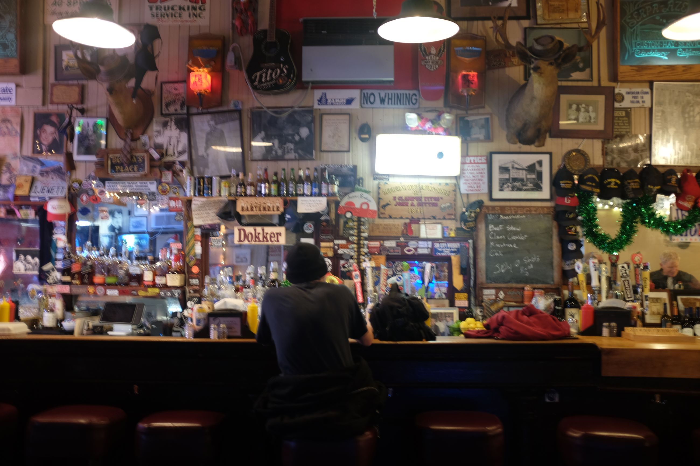
The strangest thing is that as we are about to finish, hoards of white folks come into the bar. It seems like some sort of Mar-A-Lago convention with their dye jobs and plastic skin. Some of the guys look like they're army. We leave shortly therafter as the bro vibe sets in.
The last bit is the Locke Boarding House Museum. Technically the Museum should have be the first stop but it wasn't opened when we arrived. The curation inside was collected to display and narrate the Chinese history of the town. An older lady with what seems like early-onset Parkinsons is running the shop, and she tells us -- in a perfect, drawly delta accent -- that the building had been re-fortified several times, but all other parts remain the same. Her grandfather was an original resident of Locke, but she just volunteers in the town.
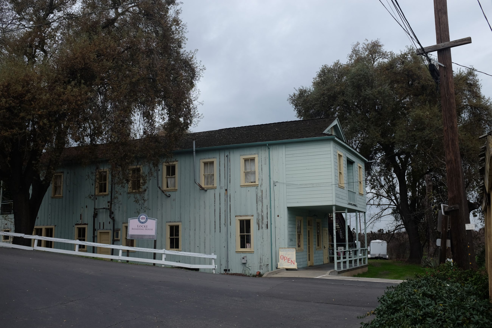
Speaking to her was the closest thing an already close slice to the past. On the lower floor hung a picture of a woman named Constance, and when we asked the lady about her she said, "Oh Connie? Connie is a sort of legend in Locke! She knew all the hsitory of the town." As if Connie had come alive for a second in this ghostly town.
Leaving Locke, we drove by and only popped in to several delta towns. Not every one has as much history as Locke and Isleton; most have become small, residential towns. Clarksburg, on the other side of the river, had an old sugar mill which looked like it had been turned to a museum/family place.
So after a day of driving through the delta, we said bye to the River and once again headed eastward towards the mountains. Although there were boomtowns all along the Sierra foothills, we were headed to Placerville and Columa -- where gold in California was first discovered.